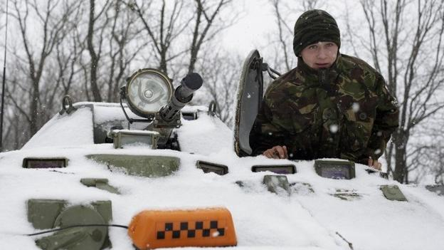

TUESDAY 17, FEBURARY

Ukrainian government and rebel forces fail to meet a deadline to start withdrawing heavy weapons, the second phase of last week's ceasefire agreement.
Person North End 1-3 Man United
The men who smuggle the loot that funds IS
Testing racism: A walk through Paris as a Jew
My taxes go where? How countries spend your money
Science & Fiction
Will we ever be able to time travel?
Sci-fi themes such as aliens and robots are somewhere on a scale of theoretically possible to eventually probable. But does the science of time travel ever match up with the fiction?
Nine future societies to avoid.
YOUR CAREER
'Team player?' No, thank you
Are you a responsible, quick-learning worker? These words can actually serve as a turn off to potential employers - but other turns of phrase can earn your CV a second glance.
THE REEL WORLD
Do Films need to be accurate?
This year’s Oscar contenders have drawn criticism for factual inaccuracies. But how important is it? Tom Brook looks at the controversy.